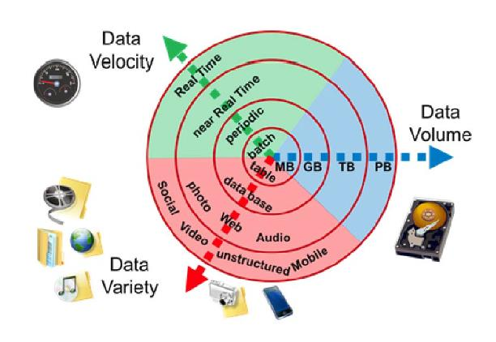

Big data primarily refers to data sets that are too large or complex to be dealt with by traditional data-processing application software. Data with many entries (rows) offer greater statistical power, while data with higher complexity (more attributes or columns) may lead to a higher false discovery rate. A large body of information cannot be comprehended when used in small amounts only.
Big data analysis includes capturing data, data storage, data analysis, search, sharing, transfer, visualization, querying, updating, information privacy, and data source. The size and number of available data sets have grown rapidly as data is collected by devices such as mobile devices, cheap and numerous information-sensing Internet websites, software logs, and cameras. "There is little doubt that the quantities of data now available are indeed large, but that's not the most relevant characteristic of this new data ecosystem." It’s about the use of predictive analytics, user behavior analytics, or certain other advanced data analytics methods that extract value from big data, and seldom to a particular size of data set. "Analysis of data sets can find new correlations to spot business trends, prevent diseases, combat crime, and so on."
Big data was originally associated with three key concepts: volume, variety, and velocity. The analysis of big data presents challenges in sampling, and thus previously allowing for only observations and sampling. Thus a fourth concept, veracity, refers to the quality or insightfulness of the data. Without sufficient investment in expertise for big data veracity, the volume and variety of data could be at risk.
Relational database management systems and desktop statistical software packages used to visualize data often have difficulty processing and analyzing big data. The processing and analysis of big data may require "massively parallel software running on tens, hundreds, or even thousands of servers". What qualifies as "big data" varies depending on the capabilities of those analyzing it and their tools. Furthermore, expanding capabilities make big data a moving target. "For some organizations, facing hundreds of gigabytes of data for the first time may trigger a need to reconsider data management options. For others, it may take tens or hundreds of terabytes before data size becomes a significant consideration."
The term big data has been in use since the 1990s, usually including data sets with sizes beyond the ability of commonly used software tools to capture, curate, manage, and process data within a tolerable elapsed time. Big data philosophy encompasses unstructured, semi-structured, and structured data; however, the main focus is on unstructured data. Big data "size" is a constantly moving target. Big data requires a set of techniques and technologies with new forms of integration to reveal insights from data sets that are diverse, complex, and of a massive scale.
A 2018 definition states "Big data is where parallel computing tools are needed to handle data", and notes, "This represents a distinct and clearly defined change in the computer science used, via parallel programming theories, and losses of some of the guarantees and capabilities made by Codd's relational model." In a comparative study of big datasets, researchers found that none of the commonly considered characteristics of big data appear consistently across all of the analyzed cases. For this reason, other studies identified the redefinition of power dynamics in knowledge discovery as the defining trait, claiming that what matters is the way in which data is collected, stored, made available, and analyzed.
"Variety", "veracity", and various other "Vs" are added by some organizations to describe it. The Vs of big data were often referred to as the "three Vs", "four Vs", and "five Vs". They represented the qualities of big data in volume, variety, velocity, veracity, and value. Variability is often included as an additional quality of big data.
1. Volume: The quantity of generated and stored data. The size of the data determines the value and potential insight, and whether it can be considered big data or not. The size of big data is usually larger than terabytes and petabytes.
2. Variety: The type and nature of the data. Earlier technologies were capable of handling structured data efficiently and effectively. However, the change in type and nature from structured to semi-structured or unstructured challenged the existing tools and technologies. Big data technologies evolved with the prime intention to capture, store, and process the semi-structured and unstructured (variety) data generated with high speed (velocity), and huge in size (volume). Big data draws from text, images, audio, video; plus it completes missing pieces through data fusion.
3. Velocity: The speed at which the data is generated and processed to meet the demands and challenges that lie in the path of growth and development. Big data is often available in real-time. Compared to small data, big data is produced more continually. Two kinds of velocity related to big data are the frequency of generation and the frequency of handling, recording, and publishing.
4. Veracity: The truthfulness or reliability of the data, which refers to the data quality and the data value. Big data must not only be large in size but also must be reliable in order to achieve value in the analysis of it. The data quality of captured data can vary greatly, affecting an accurate analysis.
5. Value: The worth of information that can be achieved by the processing and analysis of large datasets. Value may also represent the profitability of information that is retrieved from the analysis of big data.
6. Variability: The characteristic of the changing formats, structure, or sources of big data. Big data can include structured, unstructured, or combinations of structured and unstructured data. Big data analysis may integrate raw data from multiple sources. The processing of raw data may also involve transformations of unstructured data to structured data.
Big data repositories have existed in many forms, often built by corporations with a special need. Commercial vendors historically offered parallel database management systems for big data beginning in the 1990s. Teradata systems were the first to store and analyze 1 terabyte of data in 1992. Systems up until 2008 were 100% structured relational data. Since then, Teradata has added unstructured data types.
In 2000, a company developed a C++-based distributed platform for data processing and querying known as the HPCC Systems platform. This system automatically partitions, distributes, stores, and delivers structured, semi-structured, and unstructured data across multiple commodity servers. Users can write data processing pipelines and queries in a declarative dataflow programming language called ECL. Data analysts working in ECL are not required to define data schemas upfront and can rather focus on the particular problem at hand, reshaping data in the best possible manner as they develop the solution. Many physics experiments have collected big data sets for many decades, usually analyzed via high-throughput computing rather than the map-reduce architectures usually meant by the current "big data" movement.
In 2004, Google published a paper on a process called MapReduce that uses a similar architecture. The MapReduce concept provides a parallel processing model, and an associated implementation was released to process huge amounts of data. With MapReduce, queries are split and distributed across parallel nodes and processed in parallel (the "map" step). The results are then gathered and delivered (the "reduce" step). Later, Hadoop adds in-memory processing and the ability to set up many operations (not just map followed by reducing), in response to limitations in the MapReduce paradigm.
MIKE2.0 is an open approach to information management that acknowledges the need for revisions due to big data implications. The methodology addresses handling big data in terms of useful permutations of data sources, complexity in interrelationships, and difficulty in deleting (or modifying) individual records.
Studies in 2012 showed that a multiple-layer architecture was one option to address the issues that big data presents. A distributed parallel architecture distributes data across multiple servers; these parallel execution environments can dramatically improve data processing speeds. This type of architecture inserts data into a parallel DBMS, which implements the use of MapReduce and Hadoop frameworks. This type of framework looks to make the processing power transparent to the end-user by using a front-end application server.
The data lake allows an organization to shift its focus from centralized control to a shared model to respond to the changing dynamics of information management. This enables quick segregation of data into the data lake, thereby reducing the overhead time.
The main components and ecosystem of big data are as follows:
Although many approaches and technologies have been developed, it still remains difficult to carry out machine learning with big data.
The practitioners of big data analytics processes are generally hostile to slower shared storage, preferring direct-attached storage (DAS). The perception of shared storage architectures—storage area network (SAN) and network-attached storage (NAS)—is that they are relatively slow, complex, and expensive. These qualities are not consistent with big data analytics systems that thrive on system performance, commodity infrastructure, and low cost.
Real or near-real-time information delivery is one of the defining characteristics of big data analytics. Latency is therefore avoided whenever and wherever possible. Data in direct-attached memory or disk is good—data on memory or disk at the other end of an FC SAN connection is not. The cost of an SAN at the scale needed for analytics applications is much higher than other storage techniques.